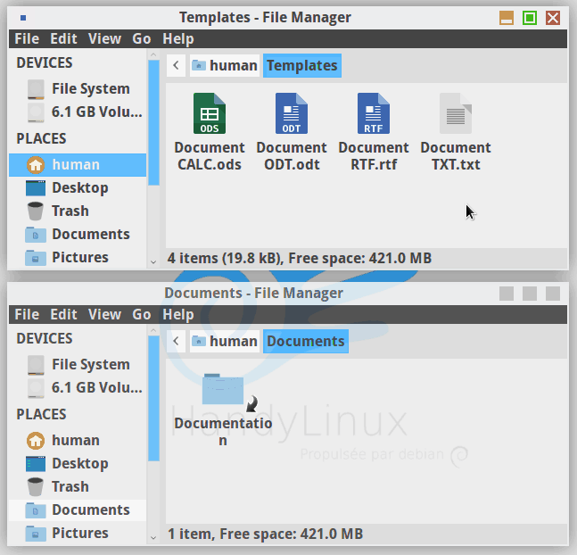
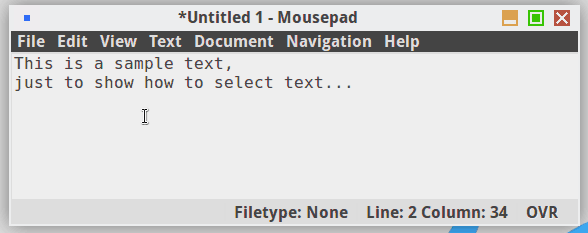
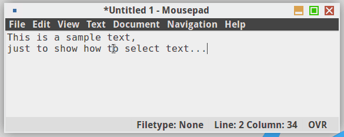
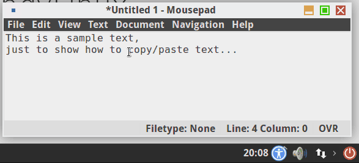
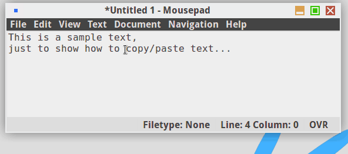
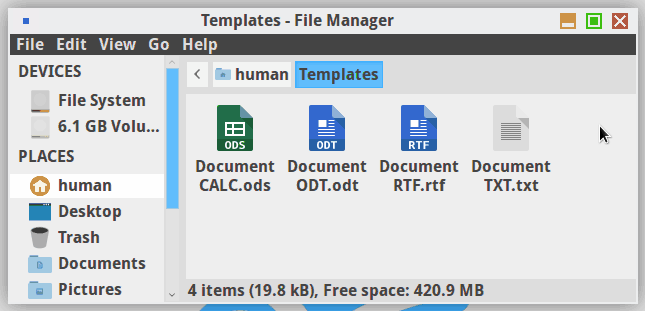
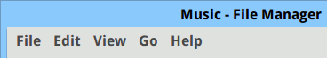

Let's get on the frightenning train...
Starting with this :
Computer people and everyday people don't speak the same language...

So ... what to do ?
Simple : just read HandyLinux documentation !
Simplified computer introduction with HandyLinux
Computer have years by years became almost essential to modern life.
Information and education do not follow the pace of progress and the needs of users.
It is therefore difficult for a "new user" to discover the full potential of its computer. In addition, we generally use only a few applications.
We will try to simplify to the maximum this universe, so you can enjoy your computer and HandyLinux opportunities.
To launch applications, click on icons, type text with the keyboard … We need the computer, screen, keyboard and mouse.
In this section, we will explain the basic actions to manage your mouse and keyboard.
Computer, what's the point ?
Begin by identifying the “clicks” of mouse according to their position :
- left-click the most common, used to open a file, a picture … HandyLinux is configured in “single-click” mode : simply pressing the left mouse button will open the pointed file/folder.
- right-click used to open a context menu to change the properties of a folder, a file...
- middle-click or mousewheel
 used to scroll, to quick copy. If your mouse does not have a middle-click or wheel, “middle-click” can be simulated by pressing both buttons.
used to scroll, to quick copy. If your mouse does not have a middle-click or wheel, “middle-click” can be simulated by pressing both buttons.
Mouse actions :
The first thing NOT TO DO is to click repeatedly on a button if nothing happens. Sometimes an application can takes time to initiate, it depends on your hardware and launched application. For example, the internet browser takes longer than the file manager.
- Closing window. It is nice to open applications and it is good to know how to close them...
To close, left-click on the red button with a cross : 
- Moving window. To move a window on your screen, simply place your cursor over the title bar (top of the window), then keep left-click and move.
If you do not have access to the title bar, you can use the special [Alt] key on your keyboard. Place your cursor in the window and then press and hold [Alt] and left click of your mouse, you can then move your window.
- Drag and Drop. To move or copy your datas easily.
Eg. to move a file from a folder to another, left-click maintained on the file, move the mouse to the destination folder and release the button mouse :

- Select text.
Place the mouse pointer at the beginning of the text to select, hold the left mouse button down while moving the mouse over the text, then release the mouse button. You can also double-click (2 fast left-clicks) on word to select it, then move the pointer.


- Copy/Paste a selection
- with HandyLinux button : Once you have made your selection (see previous chapter), left-click "copy/paste" button in the HandyLinux panel, then left-click on "Copy" button. Move your pointer where you want to paste the selection. Return to the "copy/paste" and left-click on "Paste" button.

- with the right-click : the right-click will display a "shortcut" menu allowing several actions, including copy/paste.
The cursor is placed on the selected part, right-click then select "Copy". Then place the pointer where you want to paste the selection. right-click and "Paste".

- with the middle-click : it is the fastest. Once you have selected your text, simply position the cursor where you want to paste the selection, and perform a middle-click . Your selection will be pasted.
- Select multiple items : if you want to move or delete multiple items in a folder, you can select them all. HandyLinux opens files/folders with a simple left-click. Therefore, begin handling outside of a folder or file: hold left-click , move the mouse to collect items and then release the mouse button. You can then act on the selection as described previously (copy/paste or contextual menu).

Online Exercises :
The keyboard and its keys
The keyboard is not only used to type text to search on internet or to work with a text editor. It includes special keys called modifier keys that perform quick actions by modifying the behavior of “normal” buttons. The combination of certain "special" keys with "normal" keys are named shortcuts.
Modifier keys
- The [ENTER] key is the first “special” key without actually being a modifier key. It is the most important key on your keyboard, which allows you to send a command, to search , the one who says “yes” to the computer.
When a dialog appears on the screen, either to confirm a download or removal of software, take the time to read before pressing [ENTER] key or click "yes".
- The [Ctrl] or [Control] key on both sides of the bottom space bar of your keyboard. This is the default key for most keyboard shortcuts ([Ctrl] + [c] = copy, [Ctrl] + [v] = paste).
- The [Alt] or [Function] key is the default key for specific shortcuts of each application. On opened window, press the [Alt] key displays the hotkeys to navigate the menus, perform actions. These hotkeys are identified by underlining. If you hold down [Alt] key while pressing the underlined key, it will display the corresponding menu :

In this example, "f" opens the "File" menu, "e" the "Edit" menu, "v" the "View" one... You can move in the menu with the keyboard's arrow keys.
- The [ESC] key allows you undo the last key acton.
- The [Tab] or [Tabulation] key, represented by two opposite arrows, is to complete an order or to move through the menus of a window.
- The [Shift] key represented by a large arrow upwards to type capital letters or numbers.
- The [CapsLock] key represented by a padlock or a wider [Shift], simulates [Shift] holding.
- Functions keys [F1], [F2]...[F12] execute various functions … [F1] is commonly used to have help on applications, [F11] for switching to full-screen...
Keyboard shortcuts
Why? It goes faster! Nothing to do with Uncle George shortcuts to go to New York.
Note that the keyboard shortcuts are performed holding down the keys simultaneously.
Here is a small selection of the most useful keyboard shortcuts :
- [Ctrl] + [c] : Copy a selection
- [Ctrl] + [x] : Cut a selection (in order to move)
- [Ctrl] + [v] : Paste last copied/cut selection
- [Ctrl] + [f] : Find a word or phrase
- [Ctrl] + mouse wheel : Zoom Display
- [Alt] + [F4] : Close active window
- [Alt] + [Tab] : Flowing between open windows
Many shortcuts to specific applications exist. They will be detailed in each relevant help page.
Online exercices:
This is no more complicated in most situations (sending mails, internet browsing, consulting local files). The complexity comes with additional functionalities or if you want to radically change the use of the system.
Computer, what's the point ?
Summarize the concept in a few sentences seems difficult. However, the use made of a computer is clear:
- watch a movie,
- listening to music,
- search on the internet,
- read or write emails,
- work on formatted documents, showings,
- browse photos...
Well that's exactly what you'll learn to do with HandyLinux.
HandyLinux : computer reduced to the essential
To guide you in learning this new tool, we will present simple categorized and illustrated examples. We will explain the organization of your system, so you do not lose your files.
You can follow some practical exercises that will help you take control of your computer.
Finally we show you how to change your HandyLinux distribution, how to add applications, fine tune your system and free yourself from Windows™ stress.
Computer beginners ? ... For a quick start, a "Getting Started" section is here for you :)
You are not here to learn to program or hack the box neighbor, then keep it simple and go to different categories that help to take control of your computer with HandyLinux:
- Discover HandyLinux : the default desktop, HandyMenu, information bar (the panel) ...
- Discover your system : general organization of folders and files, managing your data ...
- Discover multimédia applications : watch a movie, listen to music, browse family photos ...
- Discover office applications : viewing and editing documents preformatted multi-page (PDF), taking notes, simple or scientific calculating ...
- Discover internet applications: browse the web, read and write emails, call worldwide for free with Skype, configure your wireless connection.
- Discover accessibility tools : screen magnifier, virtual keyboard, voice synthesis ...
- Discover how to configure HandyLinux : change the wallpaper, the look of your windows, size and style of fonts, your pointer, your favorite applications ...
HandyLinux is a Collegial distribution intended for beginners.
No ridiculous question here, so feel free to join forum (fr).
HandyLinux is a french distribution but feel free to ask in your native language, we'll do our best to answer :)
If you have any questions or suggestions, contact us